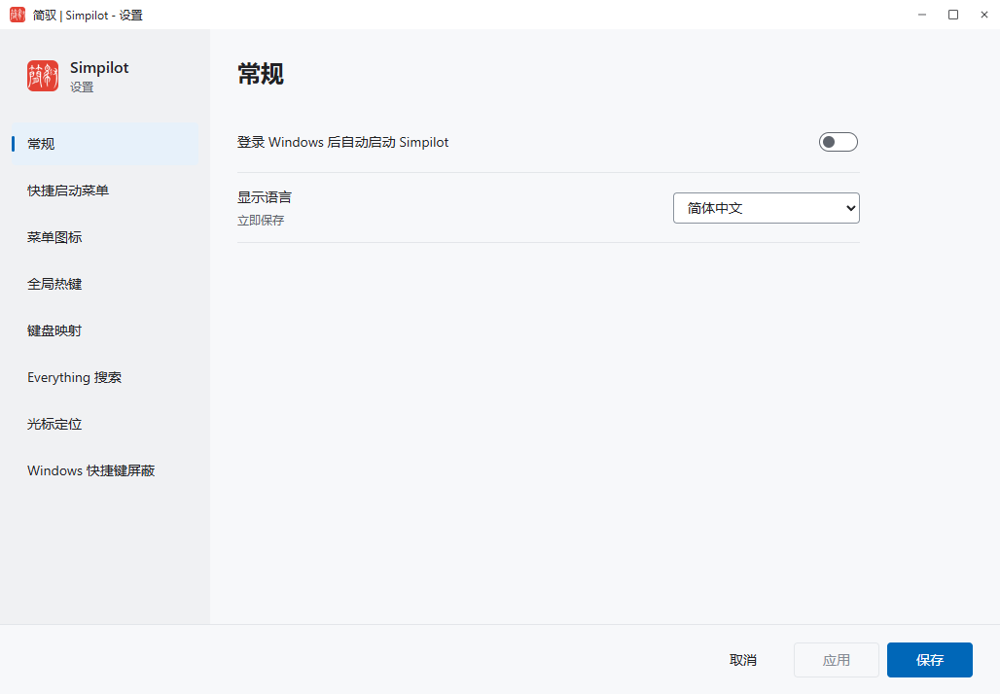
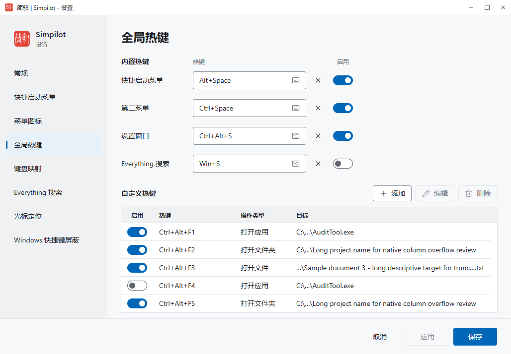
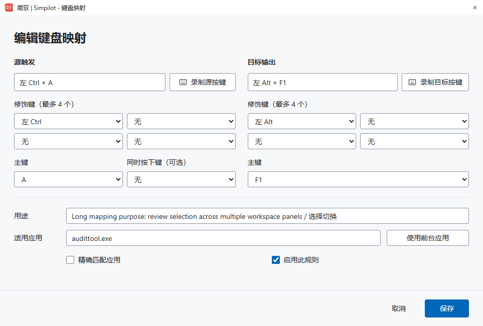
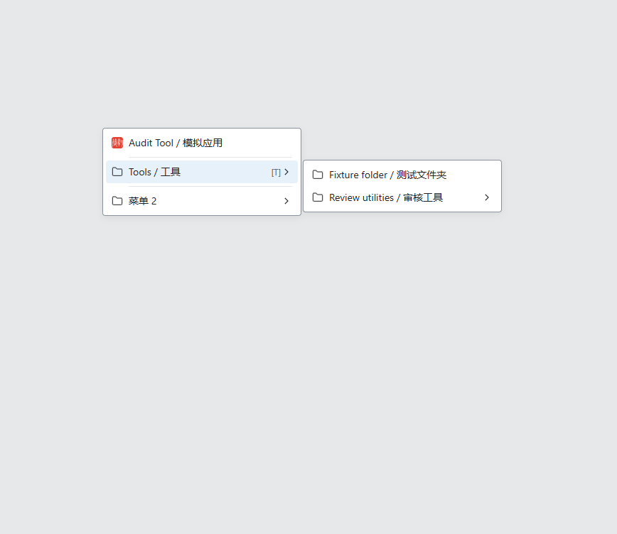

离线 HTML/CSS 效果图，不是正式产品实现、原生截图或功能验收。画布内不放提案说明或教程。数据来自审计 fixture，不执行路径或命令。
复核角色：视觉设计 / 交互设计。浏览器 deviceScaleFactor 1、1.5、2 仅验证栅格输出与 CSS 布局，不是原生 DPI 验证。
首稿保留用于追溯；本轮仅修 IF-01/02/03 与遗漏的“菜单 2”入口，等待两设计角色再次复核。



仅展开 Tools 的一级子菜单。Review utilities 保持折叠，其下 Document 2 等真实条目保存在 fixture 数据中，不改变层级。主菜单末尾保留渲染器自动附加的分隔与“菜单 2 / Menu 2”子菜单入口。中英模式均保留用户定义的双语名称。
